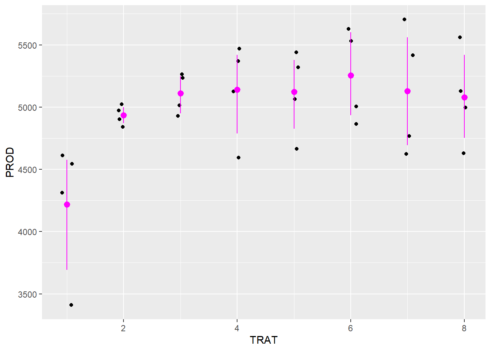
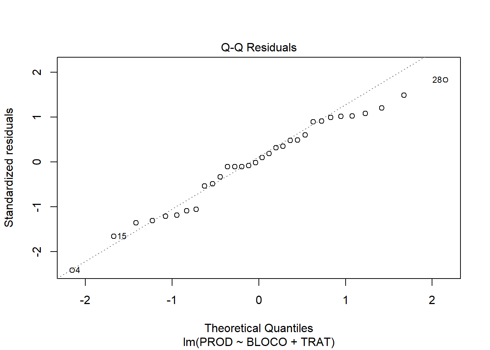
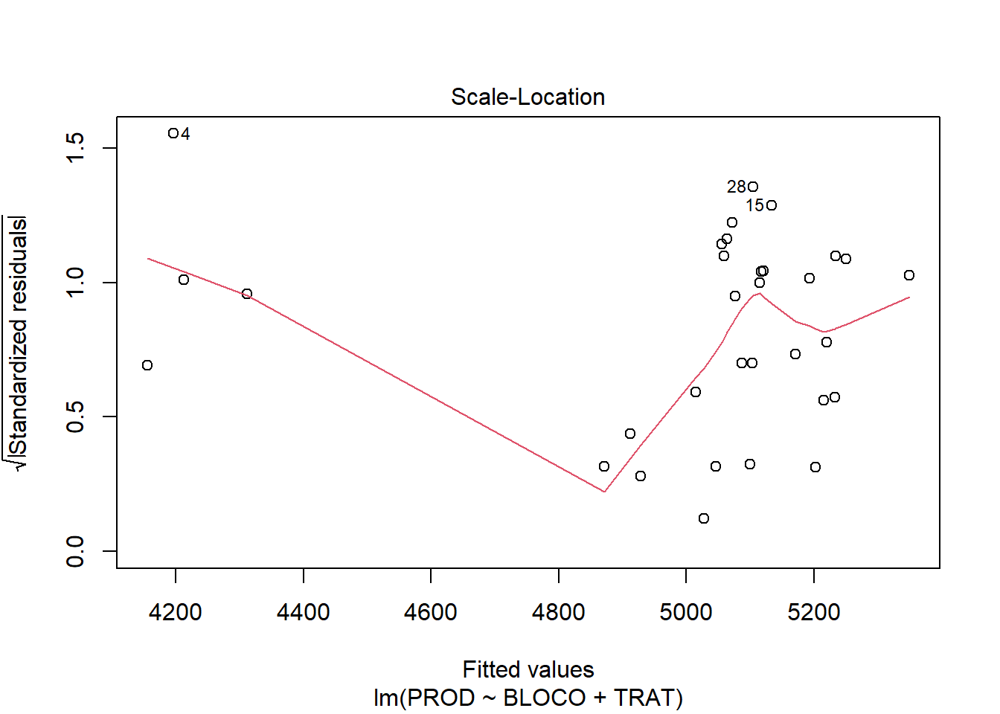
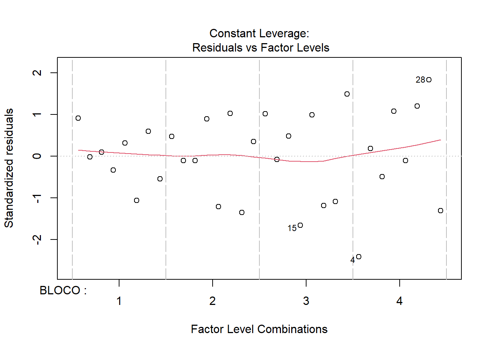
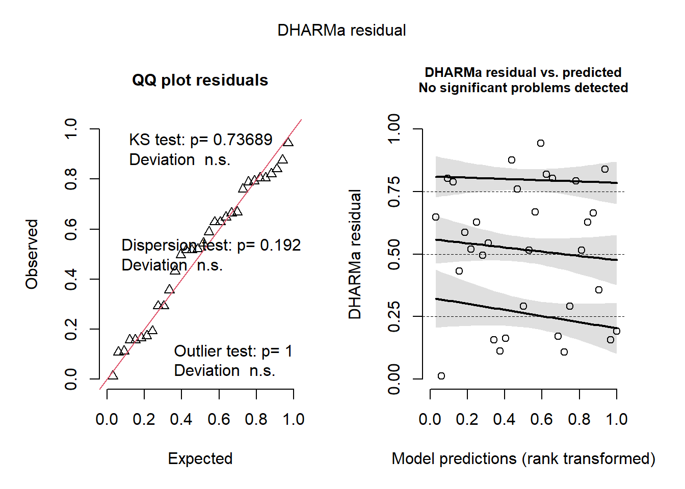

Code
library(gsheet)
library(ggplot2)
library(readxl)
library(tidyverse)
library(Hmisc)
gsheet2tbl("https://docs.google.com/spreadsheets/d/1bq2N19DcZdtax2fQW9OHSGMR0X2__Z9T/edit?gid=866852711#gid=866852711")Code
campo <- gsheet2tbl("https://docs.google.com/spreadsheets/d/1bq2N19DcZdtax2fQW9OHSGMR0X2__Z9T/edit?gid=866852711#gid=866852711")
campoCode
#visualizando os dados
campo |>
ggplot(aes(TRAT, PROD))+
geom_jitter(width = 0.1)+
stat_summary(
fun.data = "mean_cl_boot",
colour = "magenta", width = 0.3)
Code
#o comando mean_cl_boot acima, plota a média no gráfico
campo$TRAT <- factor(campo$TRAT)
campo$BLOCO <- factor(campo$BLOCO)
#a função factor é utilizada para transformar variáveis em fatores. Neste caso, foi utilizada para transformar os blocos e tratamentos, que estavam em números e o R poderia interpretar como valores.
#Anova
m_campo <- lm(PROD ~ BLOCO + TRAT, data = campo)
anova (m_campo)Code
plot(m_campo)



Code
#verificar os pressuposto de normalidade e homogeneidade
library(DHARMa)
simulateResiduals(m_campo)Object of Class DHARMa with simulated residuals based on 250 simulations with refit = FALSE . See ?DHARMa::simulateResiduals for help.
Scaled residual values: 0.788 0.648 0.804 0.012 0.496 0.432 0.52 0.588 0.516 0.544 0.668 0.292 0.356 0.76 0.108 0.804 0.628 0.112 0.82 0.516 ...Code
plot(simulateResiduals(m_campo))
Code
#para visualizar as médias marginais estimadas
library(emmeans)
means_campo <- emmeans(m_campo, ~TRAT)
means_campo TRAT emmean SE df lower.CL upper.CL
1 4219 201 21 3800 4638
2 4935 201 21 4516 5354
3 5110 201 21 4691 5529
4 5140 201 21 4721 5559
5 5122 201 21 4703 5541
6 5256 201 21 4837 5675
7 5128 201 21 4709 5546
8 5078 201 21 4659 5497
Results are averaged over the levels of: BLOCO
Confidence level used: 0.95 Code
#teste de comparação multipla
library(multcomp)
cld(means_campo)Code
#para comparações em matriz
pwpm(means_campo) 1 2 3 4 5 6 7 8
1 [4219] 0.2430 0.0792 0.0640 0.0728 0.0272 0.0700 0.0985
2 -715.8 [4935] 0.9983 0.9953 0.9974 0.9430 0.9968 0.9995
3 -890.8 -175.0 [5110] 1.0000 1.0000 0.9994 1.0000 1.0000
4 -921.0 -205.3 -30.2 [5140] 1.0000 0.9999 1.0000 1.0000
5 -902.8 -187.0 -12.0 18.3 [5122] 0.9997 1.0000 1.0000
6 -1037.0 -321.3 -146.2 -116.0 -134.3 [5256] 0.9998 0.9981
7 -908.3 -192.5 -17.5 12.8 -5.5 128.8 [5127] 1.0000
8 -859.0 -143.2 31.8 62.0 43.8 178.0 49.2 [5078]
Row and column labels: TRAT
Upper triangle: P values adjust = "tukey"
Diagonal: [Estimates] (emmean)
Lower triangle: Comparisons (estimate) earlier vs. laterCode
#para ferrugem
#Anova
f_campo <- lm(FER ~ BLOCO + TRAT, data = campo)
anova (f_campo)Code
#teste de pressupostos de homogeneidade e normalidade
plot(simulateResiduals(f_campo))
Code
#como não seguiu o pressuposto de homogeneidade, pode-se tentar transformar os dados
f_campo <- lm(log(FER) ~ BLOCO + TRAT, data = campo)
anova (f_campo)Code
means_f_campo <- emmeans(f_campo, ~TRAT, type = "response")
#utiliza-se a função type = response para sinalizar que os dados foram transformados, mas que os resultados devem ser retornados em valores reais
means_f_campo TRAT response SE df lower.CL upper.CL
1 20.02 1.960 21 16.33 24.54
2 5.68 0.556 21 4.63 6.96
3 3.81 0.373 21 3.11 4.67
4 3.08 0.301 21 2.51 3.78
5 3.24 0.317 21 2.64 3.97
6 2.98 0.292 21 2.43 3.65
7 3.37 0.330 21 2.75 4.13
8 3.48 0.341 21 2.84 4.27
Results are averaged over the levels of: BLOCO
Confidence level used: 0.95
Intervals are back-transformed from the log scale Code
plot(means_f_campo)
Code
#teste de comparação multipla
library(multcomp)
cld(means_f_campo, Letters = letters)Code
#adicionar o comando Letters = letters, retorna letras ao invés de números no resultado do teste de médias
pwpp(means_f_campo)
Code
pwpm(means_f_campo) 1 2 3 4 5 6 7 8
1 [20.02] <.0001 <.0001 <.0001 <.0001 <.0001 <.0001 <.0001
2 3.525 [ 5.68] 0.1252 0.0048 0.0110 0.0028 0.0204 0.0343
3 5.259 1.492 [ 3.81] 0.7832 0.9335 0.6440 0.9843 0.9976
4 6.500 1.844 1.236 [ 3.08] 0.9999 1.0000 0.9976 0.9842
5 6.178 1.753 1.175 0.951 [ 3.24] 0.9984 1.0000 0.9994
6 6.721 1.906 1.278 1.034 1.088 [ 2.98] 0.9842 0.9431
7 5.945 1.686 1.130 0.915 0.962 0.885 [ 3.37] 1.0000
8 5.750 1.631 1.093 0.885 0.931 0.856 0.967 [ 3.48]
Row and column labels: TRAT
Upper triangle: P values null = 1 adjust = "tukey"
Diagonal: [Estimates] (response) type = "response"
Lower triangle: Comparisons (ratio) earlier vs. laterCode
library(agricolae)
cv.model(f_campo)[1] 13.13068